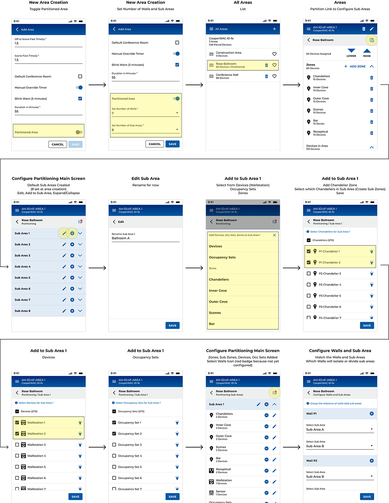

A space that changes shape during the day.
Partitioning lets large rooms be temporarily divided into smaller areas to increase the flexibility of a space. A single venue can host one 400-person gala in the morning and five simultaneous breakout sessions in the afternoon.
The dividers go by many names, operable walls, operable partitions, movable partitions. Whatever you call them, the lighting has to keep up: each room lit on its own when closed, unified when open.
one Rose Ballroom
between them
sub-area
Five steps from a sketch to a self-sensing floor.
This is the shipped configuration flow, playable. It walks the same five steps an installer runs in the WaveLinx app — create the area, define its shape, name the sub-areas, tell each wall what it joins, and wire each wall's sensor to a contact input — then hands you the walls to test. The plan below is the standard training layout: four sub-areas, five operable walls.
HARDWARE TRUTHS · one IRTR sensor per wall, transmitter facing receiver across the wall pocket (≤ 8 ft) · each IRTR is powered (EXPS-15V) and lands on a contact-closure input — one CCI module carries up to four walls, within 32 ft · an Area Controller holds up to two partitioned spaces of 10 sub-areas and 10 walls each. Flow mirrors the WaveLinx application note (v16, 2025).
Software for a room that won't hold still.
Lighting platforms assume a fixed floor plan. Partitioning breaks that assumption: the walls move, so the relationship between rooms, zones, and devices is fluid. The interface had to make a physically dynamic system feel simple to configure once, and then run itself.
A wall is a relationship between two rooms, not a device. There was no object in the platform that modelled "these two sub-areas merge when this wall opens."
When a wall opens mid-event, the lighting must unify instantly, and re-separate when it closes, without staff recalling scenes by hand.
Sub-areas, walls, joins, devices and contact inputs are a lot to set up. One wrong mapping and a wall lights the wrong rooms. The flow had to be guided and hard to get wrong.
“The wall moves. The lights should just know. I don't want to go find a laptop and open a program, I'm holding a phone.”
From the napkin sketch to the shipped flow.
I led the partitioning experience end to end, defining the concept model, pitching it at the User Advisory Group, iterating the information architecture through three major versions, and delivering the configuration flow across mobile, tablet, and desktop.
Model the space the way the people running it think about it, rooms first, walls as relationships not the way the hardware is wired.
Get that mental model right and the contact-closure plumbing disappears behind a floor plan anyone can read.
Three versions to
one mental model.
{{ verBody }}
Five guided steps,
then it runs itself.
Step through it. The shipped desktop wizard takes a room from "Partitioned" to fully wall-aware.
Commission on a phone. Operate on the wall.
An installer configures partitions on a phone at the panel; a venue manager runs the room from a wall-mounted wallstation. The same three-step model, sub-areas → walls → devices, scales to each screen.
Once the controller knows wall state, behavior follows: when walls are closed, wallstations operate their individual sub-area; when walls open, wallstations in the joined sub-areas command the original area plus any joined sub-areas.

A moving room, made
configurable once.
Partitioning was a lesson in modelling a physical, dynamic system in software. The breakthrough wasn't a screen, it was deciding that rooms, not walls, should be the primary object, and letting the wall hardware fall behind a floor plan anyone can read.
Getting there took three honest iterations and a willingness to throw out a technically-correct V1 that users couldn't reason about. The consolidated flow now reads the same on every surface, and the patterns, relationship objects, guided wizards, live state from contact inputs, carry forward into the rest of the WaveLinx platform.